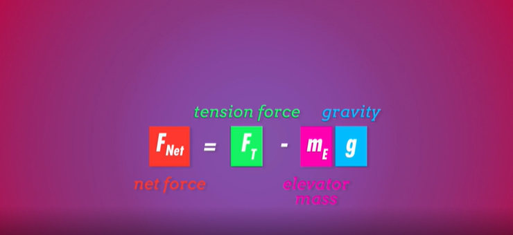

Description: This crash course video from PBS serves as a useful starting point for high schoolers to review Newton's Laws and their main

Quote: I'm sure you've heard of Isaac Newton and maybe of some of his laws. Like, that thing about "equal and opposite reactions" and such. But what do his laws mean? And how do they help us understand the world around us? In this episode of Crash Course Physics, Shini talks to us about just that.